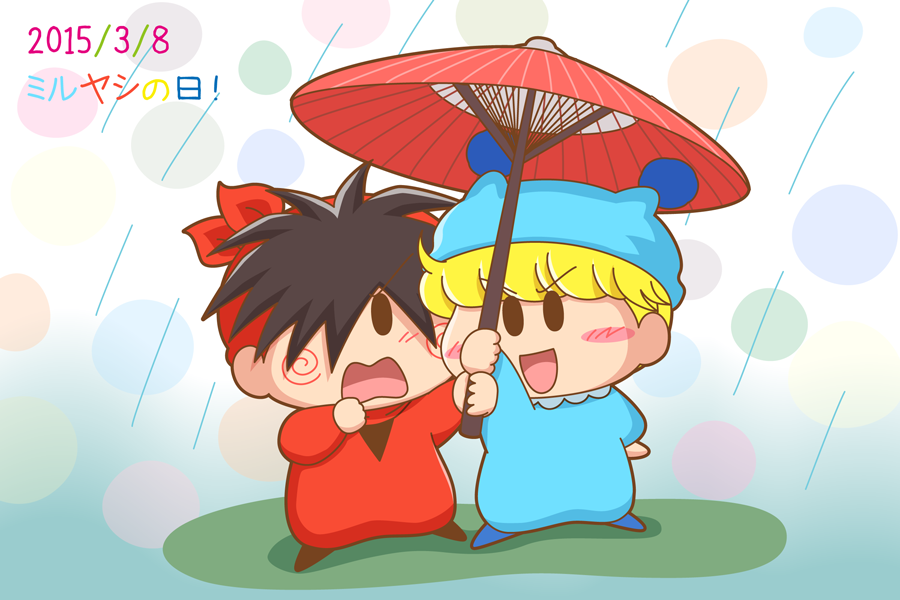

ミルモ「お、いい傘持ってんじゃねーか」
ヤシチ「ミルモっ、きさま何をする！？ 拙者が塗れてしまうではないか」
という後付けの会話は置いておいて、３月８日はミルヤシの日ということで私も記念に二人を描いてみました。
この二人の関係を一言で言い表すのは難しいですよね。幼馴染でもあり、悪友でもあり、そして○○でもあり。○○は皆さんからたくさんのキーワードが出てきそうです（特に大きいお友達からはたくさんのキーワードが^^;）。
「王子の」ミルモと「ただの」ヤシチ。身分の違いはあるけれど、この二人は大人になって身分の違いをお互い意識しながらも、今の関係を続けていそうな気がします。というかそうであってほしいですね。
(2015/3/22)